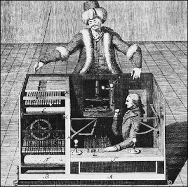
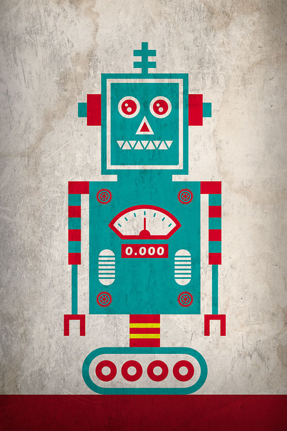

Producción Automatizada
Equipo 9
Pueden ver la presentación desde su celular ingresando a 192.168.43.223:3000/
Origenes de la Automatización
Las primeras máquinas simples sustituían una forma de esfuerzo en otra forma que fueran manejadas por el ser humano, tal como levantar un peso pesado con sistema de poleas o con una palanca.

Lo que buscaban antes
Posteriormente las máquinas fueron capaces de sustituir la energía humana o animal por formas naturales de energía renovable, tales como el viento, las mareas, o un flujo de agua.
Automatización industrial
Es el uso de sistemas o elementos computarizados y electromecánicos para controlar maquinarias o procesos industriales.
Automatización industrial como ingeniería
Como una disciplina de la ingeniería más amplia que un sistema de control, abarca la instrumentación industrial, que incluye los sensores, los transmisores de campo, los sistemas de control y supervisión.
Niveles de automatización:
Nivel(0) de Proceso
En este nivel se adquieren datos del proceso mediante sensores situados en él y se actúa mediante actuadores. Por lo tanto, este nivel es el encargado de la comunicación de los diferentes controladores del nivel de estación con los dispositivos de campo (Field devices).
Nivel (1) de Estación / Máquina:
En este nivel se elabora la información procedente de los dispositivos del nivel inferior y se informa al usuario de la situación de las variables y alarmas.
Nivel (2) de Taller / Célula:
En este nivel se realiza la coordinación de las máquinas pertenecientes a la célula de fabricación.
Nivel (3) Área:
En este nivel se coordinan entre sí las diferentes células que conforman una línea de fabricación. Sólo existen en instalaciones de un elevado nivel de complejidad, por lo que a menudo no se incluye en la pirámide CIM.
Nivel (4) Fábrica:
En este nivel se realiza el secuenciamiento de tareas y la administración de los recursos. Suele ser el responsable de la gestión de una planta o fábrica concreta. Las principales actividades se centran en la planificación y el control de la producción.
Nivel (5) Empresa:
En este nivel se lleva a cabo la gestión e integración de los niveles inferiores. En él se consideran principalmente los aspectos de la empresa desde el punto de vista de su gestión global:
- Compras
- Ventas.
- Comercialización.
- Investigación.
- Objetivos estratégicos.
- Planificación a medio y largo plazo.
Entre las áreas donde se desarrolla esta disciplina se destacan sectores industriales en rubros como la Minería, Celulosa, Metalmecánica, Automotriz, Textil, Alimentos, Integración Ingenieril entre otras que requieran de una optimización en su sistema de producción.
Automatización en la vida cotidiana
Ejemplos:
Tio

Automatización en el software

Busca que el usuario use el software intuitivamente sin ningún tipo de ayuda. También busca reducir el tiempo en que se realizan los proceso para que sean más eficientes.
¿Cómo podemos hacerlo?
2. Explicar de manera fácil e intuitiva la manera de usar el software.
Pequeño vistazo:
var prueba=1;
do{
console.log('Mientras sea mayor de 0, el programa hará esto.');
prueba--;
}while(prueba>0);
Ejemplos de software automatizado:

Robótica
Técnica que se utiliza en el diseño y la construcción de robots y aparatos que realizan operaciones o trabajos, generalmente en instalaciones industriales y en sustitución de la mano de obra humana.

Robótica Industrial
“Un robot industrial es un manipulador multifuncional reprogramable diseñado para desplazar materiales, piezas, herramientas o dispositivos especiales, mediante movimientos variables programados para la ejecución de una diversidad de tareas.”
En la actualidad el uso de los robots industriales está concentrado en operaciones muy simples, como tareas repetitivas que no requieren tanta precisión.
El uso de robots industriales junto con los sistemas de diseño asistidos por computadora (CAD), y los sistemas de fabricación asistidos por computadora (CAM).
Inteligencia Artificial
Programa de computación diseñado para realizar determinadas operaciones que se consideran propias de la inteligencia humana, como el autoaprendizaje.
Inteligencia artificial en procesos industriales
Carreras en el IPN relacionadas con Automatización y Robótica
• Ingeniería en Control y Automatización
| ESIME Zacatenco
• Ingeniería Química Industrial
| ESIQIE

• Licenciatura en Administración Industrial
| UPIICSA
• Ingeniería en Robótica Industrial
| ESIME Azcapotzalco